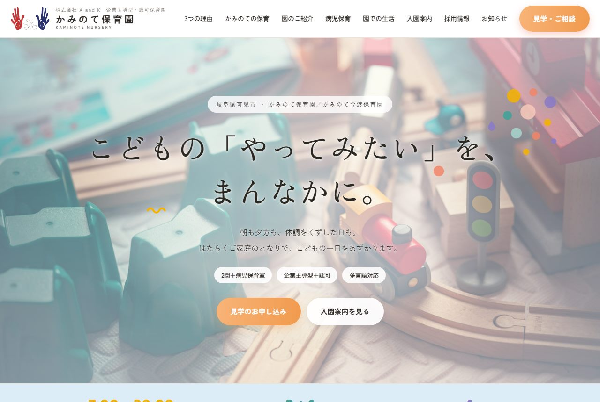
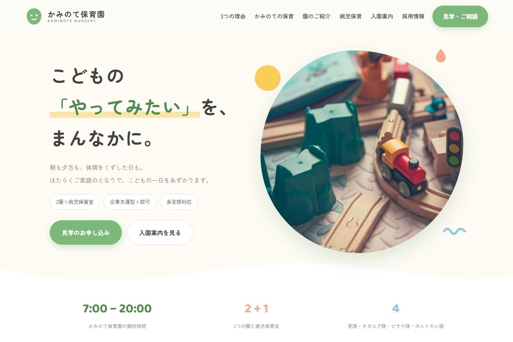
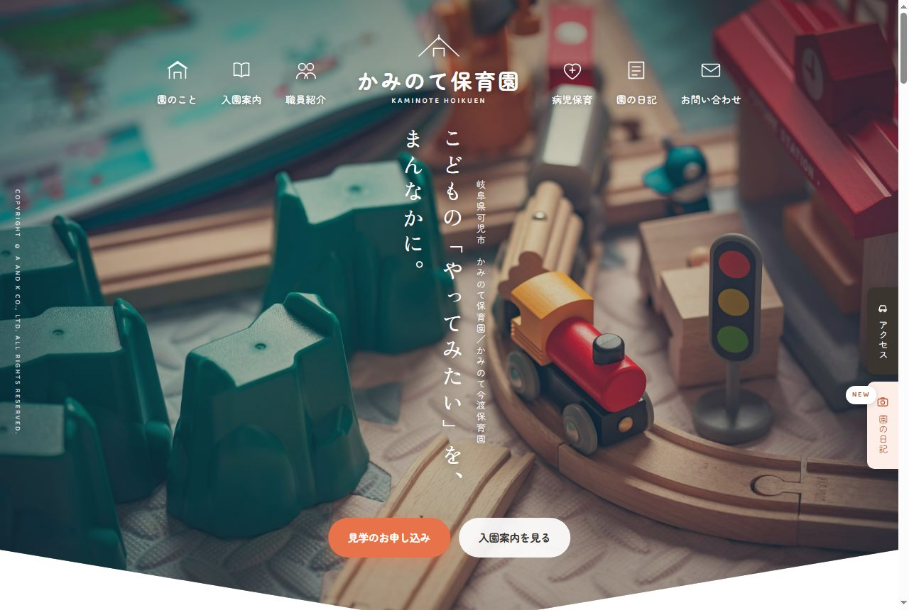
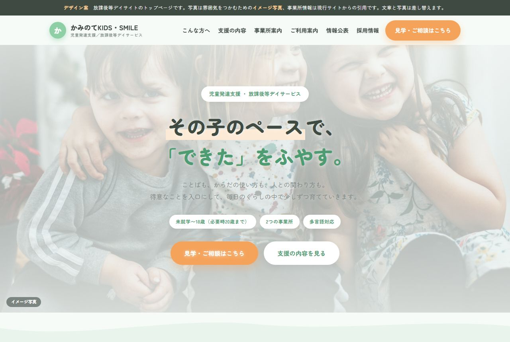

間取りが決まったので、
内装をお見せします。
前回お決めいただいた2サイト案にそって、 保育園サイトと放課後等デイサイトのトップページをお作りしました。 保育園サイトは3案ご用意しています。 実際に動くページですので、パソコンでもスマートフォンでもご覧いただけます。
この資料でお決めいただくのは保育園サイトを3案のどれで進めるかです。
はじめに
前回の資料でサイトの構成をお決めいただきました。 家づくりでいう間取り図にあたる部分です。
今回はそこに色と書体を当てたものをご覧いただきます。 内装の方向を先に決めておくと、このあとの全ページ制作が一度で進みます。
まだ写真は撮影前で、文章も下書きです。色の印象と全体の雰囲気だけ見ていただければ十分です。
デザイン案
画像は上のほうだけです。「実物を見る」から開くと、最後まで見られます。
保育園サイトは3案お作りしました。 どれも中身（載せる情報とその順番）は同じで、見た目だけが違います。 どれか1つをお選びください。組み合わせのご要望（Aの色でCの並び、など）でもかまいません。
保育園サイト 案A
写真を主役に
ご参考にいただいた画面イメージに、いちばん近い案です。白いヘッダーにアイコン付きのメニューを並べ、その下の大きな写真に明朝体の見出しを重ねました。文字のまわりに小さな色の飾りを散らし、園の楽しい雰囲気を出しています。いただいたイメージのまま進めたい場合はこの案です。
実物を見る保育園サイト 案B
やわらかい曲線
写真をまるく切り抜き、区切りを波線にした案です。丸みのある書体と若草色で、3案のなかでいちばん親しみやすい印象になります。はじめてご覧になる保護者の方に、やさしい第一印象を持ってもらいたい場合に向いています。
実物を見る保育園サイト 案C
縦書きと全画面写真
白いヘッダーを置かず、開いた瞬間は写真だけが画面いっぱいに広がる案です。園名を中央に、メニューを左右に振り分けて写真の上に浮かせ、園の言葉は縦書きで置きました。3案のなかでいちばん写真が大きく出て、落ち着いた雰囲気になります。そのぶん、よいお写真がそろっているかで印象が変わる案でもあります。
実物を見る放課後等デイサイト
パステルグリーン
かみのてKIDSとかみのてSMILEを1つのサイトにまとめています。 ご要望のパステルグリーンを主にしました。 支援プログラム・自己評価・保護者評価の公表欄も入れてあります。
実物を見る2つのサイトの関係
保育園サイトはどの案をお選びいただいても、放課後等デイサイトと書体・ボタンの形・見出しの作りをそろえます。 別のサイトだけれど、同じグループだと分かる状態です。
いま入っている情報
ご覧いただくときに、ここだけ先にお伝えしておきます。
| 住所・電話・料金など | 今のホームページから引用しています。最新かどうか、ご確認をお願いします。 |
|---|---|
| 写真 | すべて仮の写真です。左上に「イメージ写真」と出しています。取材時に撮影して差し替えます。 |
| 文章 | こちらで書いた下書きです。取材でお話を伺ってから作り直します。 |
※ ページのいちばん上にある黒い帯は、この確認用に出しているものです。公開時には外します。
ご確認いただきたいこと
デザインのご意見とあわせて、この6点をお聞かせください。 ここが決まると、次の工程に進めます。
保育園サイトのデザイン案
案A・案B・案Cから1つお選びください。中身（載せる情報とその順番）は3案とも同じで、見た目だけが違います。 組み合わせのご要望（Aの色でCの並び、など）でもかまいません。 おすすめ：迷われたら案B。保育園らしい親しみやすさがあり、写真の出来に左右されにくい作りです。
HANDS OF GOD の扱い
前回の構成のお話には出ていませんでしたが、認可外保育園として運営されていることを確認しました。 学童保育もされているようです。どちらのサイトに載せるか決める必要があります。 おすすめ：保育園サイトの中に1ページ追加。保育の事業なので自然におさまり、2サイトのままで済みます。
かみのてSMILE の自己評価・保護者評価
今のホームページには、かみのてKIDS の分だけ掲載されているようにお見受けしました。 SMILE の分もございましたら、お預かりして一緒に掲載します。
公表資料の受け渡し方法
自己評価と保護者評価は年1回（3月）の更新と伺っています。 御社でデータを作成いただき、こちらで差し替える形を想定しています。 メールでPDFをお送りいただければ、こちらで差し替えて年度の表示も更新します。
掲載する情報の最終確認
保育料・利用時間・定員などは変わることがあります。 公開前に、最新のものを一度ご確認ください。
取材と撮影の日程
写真がすべて仮のままなので、ここがいちばん時間がかかります。 園とお子さまのご都合のよい時期をお聞かせください。 撮影したい場所は、こちらから一覧をお渡しします。当日に迷わないようにするためです。
これからの進め方
※ 取材・撮影の日程が決まると、公開までの見通しがはっきりします。